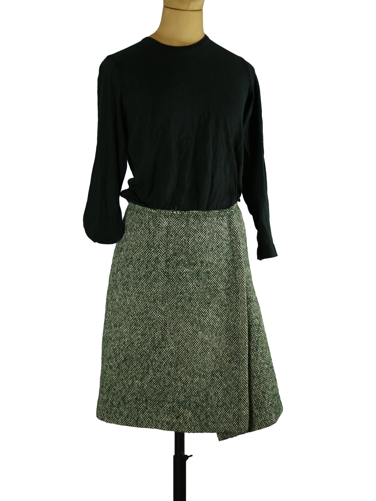

1 / 11Aus dem kuratierten Archiv von Disorder119. Dieser Prada Rock verbindet klare Linien mit einer zurückhaltenden, textilen Tiefe. Die grün melierte Oberfläche zeigt eine feine, körnige Struktur, die dem Material eine lebendige, beinahe tweedartige Wirkung verleiht. Die Silhouette ist leicht ausgestellt und fällt ruhig bis knapp über das Knie. Eine überlappende Frontpartie setzt einen subtilen Akzent und verleiht dem klassischen Schnitt eine moderne Spannung. Der Rock sitzt hoch in der Taille und formt eine definierte Linie, ohne einzuengen. In Kombination mit schlichten Oberteilen oder strukturierten Blusen entsteht ein ausgewogenes, zeitloses Bild. Innen ist das Modell gefüttert und sauber verarbeitet. Das Prada Label mit Größenangabe 42 ist eingenäht. Im Futter befinden sich kleine Beschädigungen, die von außen nicht sichtbar sind und die äußere Erscheinung nicht beeinträchtigen. Details: Marke Prada Farbe Grün meliert Größe IT 42 Passform Tailliert, leicht ausgestellt Verschluss Seitlicher Verschluss Material Nicht angegeben Herstellungsland Italien Fotografie & Passform: Das Kleidungsstück wurde auf unserer Standard-Schneiderpuppe fotografiert, die wir zur konsistenten Darstellung aller Kleidungsstücke verwenden. Maße der Schneiderpuppe: Brustumfang 89 cm Taillenumfang 66 cm Hüftumfang 89 cm Schulterbreite 38 cm Diese Maße dienen ausschließlich der visuellen Einordnung und werden nicht als Artikelmaße bezeichnet. Zustand: Gebraucht. Kleine Beschädigungen im Innenfutter, außen nicht sichtbar. Rechtliche Hinweise: Verkauf als gebrauchtes Kleidungsstück. Die Beschreibung erfolgt nach bestem Wissen und Gewissen. Farbnuancen und Oberflächenwirkungen können aufgrund von Lichtverhältnissen bei der Fotografie sowie unterschiedlicher Bildschirmdarstellungen leicht vom Original abweichen. Disorder119 steht für sorgfältig kuratierte Designerstücke mit Fokus auf Authentizität, Qualität und zeitlose Relevanz.
Disorder119 · Kuratiertes Archiv für Designer-, Vintage- und Contemporary-Mode. Jedes Stück wird einzeln ausgewählt, fotografiert und beschrieben.